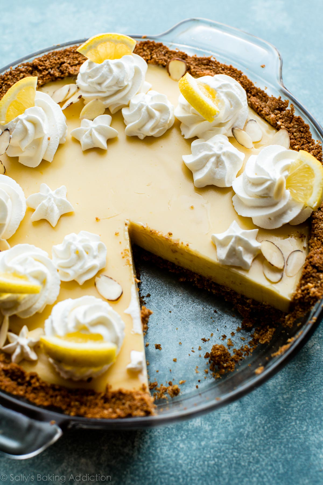

Creamy Lemon Pie

Description
Deliciously cool and creamy lemon pie is the perfect summer dessert made with only 7 simple ingredients.
Ingredients
Graham Cracker Almond Crust
- 9 (135g) full-sheet graham crackers
- 1/2 cup (62g) salted almonds
- 1 Tablespoon granulated sugar
- 5 Tablespoons (72g) unsalted butter melted
Filling + Topping
- 2 (14 ounce weight) cans full-fat sweetened condensed milk
- 3/4 cup (180ml) fresh lemon juice (about 4 lemons)
- 4 large egg yolks
- garnish: lemon zest, lemon slices, almonds, whipped cream, or meringue topping
Steps
- Preheat oven to 350°F (177°C).
- Make the crust: Using a food processor, pulse the graham crackers and almonds together into crumbs. A few larger pieces of nuts is OK! Pour into a medium bowl and stir in sugar and melted butter until combined. Press tightly into the bottom and up the sides of a 9-inch pie dish. Pre-bake crust for 8 minutes. Leave oven on.
- Make the filling: Whisk the sweetened condensed milk, lemon juice, and egg yolks together– or use an electric mixer. Pour into warm crust.
- Bake the pie for 18-21 minutes or until only *slightly* jiggly in the center. You want it mostly set. Remove from the oven and allow to cool completely on a wire rack. Once cool, cover and chill for at least 1 hour (and up to 3 days) before serving.
- Garnish as desired. Store leftovers in the refrigerator for up to 1 week.
Return to home